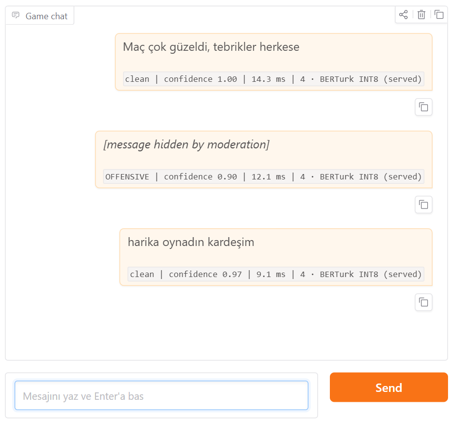
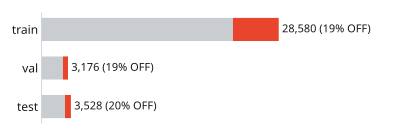
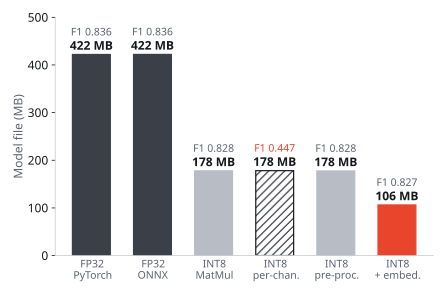
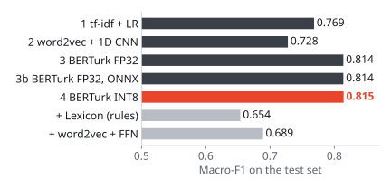
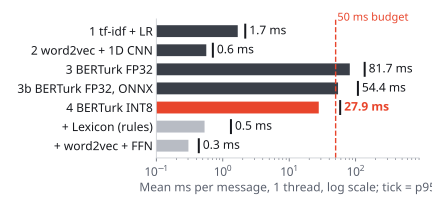

A ladder of four models, from an edit-distance lexicon to an INT8-quantized BERTurk that flags offensive messages on a single CPU core.
| Student | Arda Kocadoru |
| Student ID | 220901583 |
| Use case | 4, Real-Time Chat Moderation |
| Repository | github.com/ardakocadoru/swe015-chat-moderation |
| Demo video | <YOUTUBE / DRIVE VIDEO URL> |
| Model weights | huggingface.co/ardakocadoru/swe015-chat-moderation |

Most online games have an open chat, and players insult each other in it. The moderation model checks each message before it is shown, so its run time adds to the delay of every message. The chat server has no GPU.
For Use Case 4, Real-Time Chat Moderation, I built an application that labels each Turkish message as clean or offensive, hides the offensive ones and logs how long every decision takes.
OffensEval-TR 2020 (Çöltekin, LREC 2020), tweets labelled NOT or OFF, CC-BY 2.0.

Train and validation are a stratified 90/10 split of the official training file (seed 42). The official test set is the held-out set: hyper-parameters, early stopping, thresholds and the quantization variant were all chosen on validation. The test set is used only for the final evaluation, the same for every model.
| @USER @USER çok iyi | çok iyi | mentions in 48% of tweets |
| çoooook güzeeel | çok güzel | repeated letters, 4% |
| L Ü T F E N | lütfen | spaced-out letters |
| s4l4k | salak | leetspeak |
| #İyiOyunlar | iyi oyunlar | hashtags |
| IŞIK, güzel | isik, guzel | Turkish casing, ASCII |
The classical models get the full normalisation. BERTurk is cased and has its own WordPiece
vocabulary, so it only gets the noise removal (normalize.py).
w2v_ffn.pyw2v_cnn.pynormalize.pylexicon.pytfidf_model.pyw2v_ffn.py04_finetune_bert.pybert_model.py05_export_quantize.pybert_model.py06_benchmark.pytorch.onnx.export with dynamic batch and sequence axes. The ONNX graph reproduces
PyTorch to within 0.000009 in probability.Per-channel scales collapsed the model to one class (val F1 0.447), so per-tensor scales are used. Quantizing the 32k × 768 embedding matrix as well saved another 71 MB.

F1 above each bar is the validation macro-F1. Hatched: per-channel scales.
| Step | Model | Precision, runtime | Macro-F1 | Size (MB) | Latency, 1 thread mean (ms) | p95 (ms) | 4 threads mean (ms) | ≤ 50 ms |
|---|---|---|---|---|---|---|---|---|
| 1 | tf-idf + Logistic Regression | FP64, scikit-learn | 0.769 | 2.2 | 1.7 | 2.2 | 1.7 | yes |
| 2 | word2vec + 1D CNN | FP32, PyTorch | 0.728 | 11.8 | 0.6 | 0.7 | 0.6 | yes |
| 3 | BERTurk fine-tuned | FP32, PyTorch | 0.814 | 422.0 | 81.7 | 136.7 | 50.4 | no |
| 3b | BERTurk fine-tuned (ONNX) | FP32, ONNX Runtime | 0.814 | 422.2 | 54.4 | 108.2 | 29.0 | no |
| 4 | BERTurk fine-tuned, quantized | INT8 (dynamic), ONNX Runtime | 0.815 | 106.2 | 27.9 | 58.5 | 15.6 | yes |
| + | Rule: edit-distance lexicon | rules, Python | 0.654 | 0.003 | 0.5 | 1.3 | 0.5 | yes |
| + | word2vec + Feedforward NN | FP32, PyTorch | 0.689 | 11.8 | 0.3 | 0.4 | 0.3 | yes |
Latency: one message at a time, end to end (normalisation, tokenisation, model), mean of 300 different test messages after 20 warm-up messages, freshly loaded model. Size: model files on disk. Hardware: AMD Ryzen 7 5700X 8-Core Processor, 32 GB RAM, Windows 11, CPU only; PyTorch 2.15.0, ONNX Runtime 1.32.0. Rows marked + were trained in addition to the ladder.


| Model | Where it wins | Where it loses |
|---|---|---|
| Lexicon (rules) | under 1 ms (0.5 ms), tiny, every decision explainable | finds only 41% of offensive tweets; misses insults without a listed word |
| tf-idf + LR | best cheap model: 0.769 in 1.7 ms; char n-grams catch typos and suffixes | no context; 4.6 F1 points below BERTurk |
| word2vec + CNN / FFN | under 1 ms; the CNN sees word order (0.728 vs 0.689) | embeddings learned from 28k tweets are weak, so both stay below tf-idf |
| BERTurk FP32 | macro-F1 0.814, above every model without pre-training | 422 MB; 82 ms in PyTorch misses the budget, ONNX (54 ms, p95 108) just misses it |
| BERTurk INT8 | same F1 (0.815), 4.0× smaller, 2.9× faster (27.9 ms): served in the app | p95 58 ms on one thread; still misses veiled insults |
Senin için yansın ama seni yaksın
Saatlerdir internetten deri pantolon seçmeye çalışıyorum ama hiç bişeyin bana olup olmayacağından emin olamıyorum siz nasıl kahinlersiniz nasıl kumarbazlarsınız siz
Tanışmak isteyen ve sohbet etmek isteyen var mı ? İyi geceler
| predicted clean | predicted offensive | |
|---|---|---|
| gold clean | 2,653 | 159 |
| gold offensive | 245 | 471 |
Recall on offensive tweets 66%, precision 75%. Missed insults are more frequent than false alarms, so some abuse still gets through. Quantization changed only 47 of 3,528 decisions compared to FP32.
Claude Code (Anthropic), an AI coding assistant, used for:
results/*.json),
not from papers, model cards or AI answers;